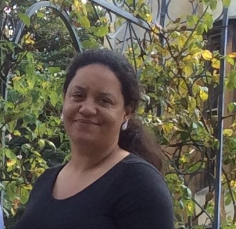
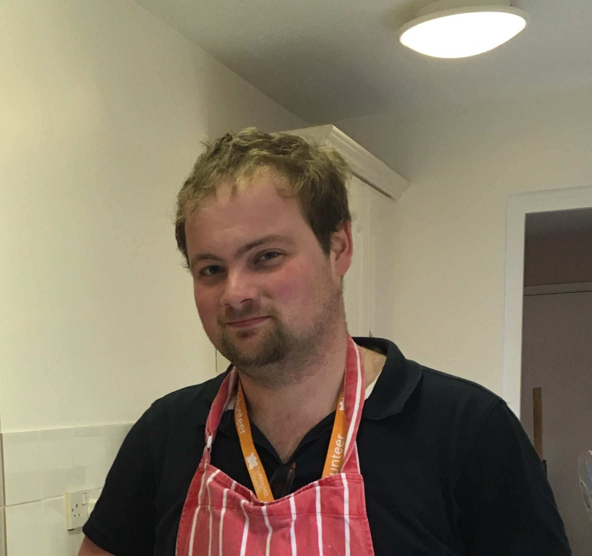

Who is Soup4Lunch?
Soup4Lunch is a new and innovative social enterprise that brings kitchen gardens and cmmunity cafés to
sheltered housing for over 50s and vulnerable adults. The focus is on gardening and healthy eating and the
aim is to engage residents in self-directed activity. The Hammersmith and Fulham based enterprise got its name
from a 100 year old resident who commented one day... "all I would like today is a bowl of 'Soup for Lunch' ".
The concept for Soup4Lunch challenges the current ideas about ageing. Rather than being an organisation that
'provides' services, we inspire local residents to develop and deliver their own in-house activities through
gardening and shared meals. Once a week, during the growing season we have a vegetable gardening session and grow
many of our own herbs and vegetables for fortnightly shared meals made up of two different vegetable soups, hot
bread and a fruit pudding. The activities are tailored to the residents at each sheltered housing scheme and reflect the ages,
social and cultural backgrounds of each.
Our programmes are really more about building relationships and challenging isolation than on providing a service.
Meet our team bellow :

Anne Macalpine-Lenny,
Founder & Director

Elvira Assare-Hunte,
Legal Director
Mariola Calvo-Montero,
Finance & Opertions Manager

Sean Connor,
Head Gardener
Elvira Stott,
Head Volunteer
What We Do
What we do:
- Meet with residents to develop an individualised programme
- Enliven kitchens, community centres and green space for residents in sheltered housing
- Work with scheme managers and local community resources
- Focus on relational caring
- Go on outings
- Encourage active participation
- Engage the residents as volunteers
- Plant and maintain vegetable gardens in accessible, raised beds
- Make a delicious and nutritious lunch both from what we produce and other local food
- Serve a vegetable soup, hot bread, and fruit pudding lunch fortnightly
Our current projects operate in:
- Rowberry Close; H&F, Fulham including Cedar Lodge and Meadowbank Close
- Trillington House, Hammersmith; Askham house, Hammersmith; NHHT
- Baths Court, Hammersmith; Goldhawk house, Hammersmith; NHHT
- Sycamore House, Hammersmith; Hammersmith United Charities
- John Betts, Hammersmith; Hammermith United Charities
Want to be involved ?
What we do and where our team of volunteers can help:
- Weekly gardening sessions
- Weekly shared meals
- Become a Soup4Lunch advocate with local commissioners and services
- Help install a pop-up art gallery
- Go on outings
- Van driver for outings
- Provide information and hands on sessions on topics in health, gardening, active lifestyles, cooking and baking